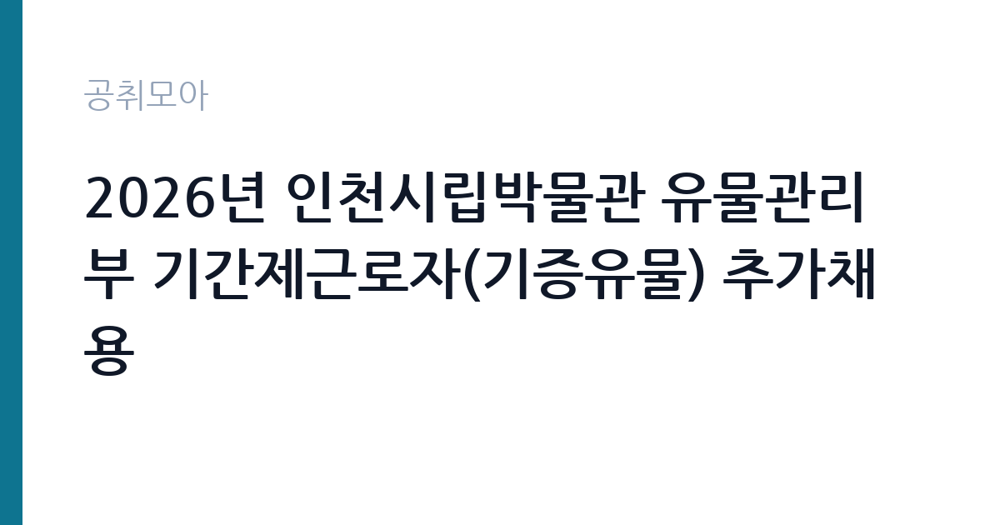

[지자체] 2026년 인천시립박물관 유물관리부 기간제근로자(기증유물) 추가채용
인천광역시 시립박물관 유물관리부 · 인천 · 마감 2026-10-11 (D-1) · 출처 나라일터

한눈에 보는 모집 조건
| 기관 | 인천광역시 시립박물관 유물관리부 |
|---|---|
| 공고명 | 2026년 인천시립박물관 유물관리부 기간제근로자(기증유물) 추가채용 |
| 고용형태 | 기간제 |
| 근무지 | 인천 |
| 게시일 | 2026-10-10 |
| 마감일 | 2026-10-11 (D-1) |
지원자격, 이렇게 읽으세요
- 기간제근로자 1명
- 접수 ~2026-10-11 마감
- 세부 조건은 원문 공고문 확인
원문 공고문에 명시된 자격요건을 반드시 직접 확인하셔야 합니다. 참고로 같은 유물관리부가 2026년 2월에 낸 신규 기간제근로자 채용 공고에서는 박물관과 역사 관련 학과 학사 학위 이상 졸업자이면서 채용분야 관련 실무 6개월 이상 경력자를 자격조건으로 제시한 바 있습니다(출처: 인천광역시립박물관 고시공고). 다만 이번 추가채용의 조건이 동일하다는 보장은 없으므로, 학위와 전공, 경력 인정 범위와 산정 기준일을 원문에서 대조하시기 바랍니다. 채용인원이 1명뿐인 소규모 선발에서는 서류전형의 정량 배점이 당락을 가르는 경우가 많으며, 경력증명서와 자격증 사본 같은 증빙서류의 누락이 곧바로 탈락 사유가 됩니다. 접수 마감이 매우 촉박한 만큼 서류 준비에 착수하시기 바랍니다.
이 공고의 포인트
이 공고의 가장 큰 특징은 담당 업무가 기증유물 정리로 못 박혀 있다는 점입니다. 일반적인 박물관 기간제가 전시 보조나 행정보조를 병행하는 경우와 달리, 수장고에 입고된 기증유물의 등록과 정리라는 전문 실무에 집중하게 됩니다. 유물 등록과 상태 점검, 목록 DB 정비 경험은 학예사나 박물관 전문인력을 준비하시는 분께 이력서에 적을 수 있는 실질적인 경력이 됩니다. 인천시립박물관은 연수구 청량로에 위치한 인천의 대표 공립박물관으로, 검단신도시박물관 건립 같은 현안 사업도 함께 진행하고 있어 박물관 행정의 흐름을 가까이에서 익힐 수 있습니다. 채용인원이 1명이라 경쟁이 불가피하지만, 추가채용 특성상 앞선 모집에서 적격자가 나오지 않았을 가능성도 있어 요건을 갖춘 분께는 기회가 될 수 있습니다.
전형은 어떻게 진행되나
전형 방식의 세부 내용은 원문 공고문에서 확인하시기 바랍니다. 같은 부서의 지난 2월 추가채용 사례에서는 서류전형 합격자 발표 후 면접전형을 시행하는 2단계 구조였으며, 면접은 시립박물관 청사 내에서 진행됐습니다(출처: 인천광역시립박물관 공고 제2026-14호). 일반적으로 지자체 박물관 기간제 채용은 서류 심사에서 자격요건 충족 여부와 관련 경력을 평가한 뒤, 면접에서 직무 이해도와 근무 가능 여부를 확인하는 순서로 진행됩니다. 지원자분께서는 유물관리 실무 경험을 서류에 구체적으로 적으시고, 면접에서는 기증유물 정리 업무에 대한 이해와 성실한 근무 의지를 보여주시기 바랍니다. 발표 일정과 면접 장소, 지참물은 원문 공고문을 기준으로 준비하시기 바랍니다.
이런 분께 추천해요
- 박물관학과와 역사학과, 미술사학과, 고고학과 등 관련 전공을 졸업하고 박물관 현장 경력을 시작하고 싶으신 분께 적합합니다.
- 유물 등록과 수장고 정리, 소장품 DB 관리 같은 실무 경험이 있어 곧바로 업무에 투입될 수 있는 분께 좋은 자리입니다.
- 인천 연수구 일대로 출근이 가능하고 단기 집중 근무에 적응할 수 있는 분, 학예 분야로 진로를 굳히려는 분께 권합니다.
지원 전 체크리스트
- 인천광역시립박물관 누리집 고시공고에 게시된 원문 공고문과 제출서식(응시원서 등)을 내려받았는지 확인하십시오.
- 학위와 전공, 경력월수 산정 기준일과 인정 범위가 본인의 이력과 맞는지 대조하십시오.
- 접수 방법과 접수처, 마감 시각을 확인하고 마감일 오전까지 접수를 마치십시오.
- 근무지와 근무 예정 기간, 보수 조건을 확인한 뒤 지원 여부를 결정하십시오.
모집 일정과 제출 타이밍
게시일은 2026년 10월 10일이며 접수 마감일은 2026년 10월 11일입니다. 공고 기간이 이틀에 불과한 초단기 접수이므로, 이 글을 읽으시는 즉시 원문을 확인하고 서류를 준비하셔야 합니다. 서류전형 합격자 발표와 면접전형 일정은 원문 공고문에 안내된 바를 따르시면 됩니다. 우편 접수가 허용되는 경우 도착분 기준인지 발송분 기준인지가 중요하므로 접수 방법을 꼼꼼히 읽으시고, 방문이나 이메일 접수가 가능하다면 접수 확인 여부를 담당 부서(유물관리부 032-440-6748)에 문의하시는 편이 안전합니다.
직무 이해하기: 지자체
유물관리부는 박물관이 소장한 유물의 입수와 등록, 보존, 관리를 전담하는 부서입니다. 기증유물 담당자는 기증받은 유물의 인수와 목록 작성, 상태 점검, 수장고 배치, 소장품 관리 시스템 등록 같은 업무를 맡게 됩니다. 유물 한 점마다 명칭과 규격, 재질, 상태를 기록하고 사진을 남기는 정밀한 행정 작업이 중심이며, 파손이나 분실이 없도록 수장고 출납을 관리하는 책임도 따릅니다. 검단신도시박물관 건립 같은 사업이 진행 중일 때는 신축 박물관으로 이전할 자료의 정리와 지원 업무가 더해질 수 있습니다. 화려한 전시 업무 뒤에서 박물관의 신뢰를 지탱하는 자리이며, 꼼꼼함과 기록 습관이 가장 중요한 자질입니다.
자기소개서 작성 팁
자기소개서나 응시원서의 작성 항목에는 유물관리 실무와 연결되는 경험을 중심으로 적으시는 편이 좋습니다. 박물관 실습이나 인턴, 유물 정리 봉사, 소장품 DB 입력 같은 경험이 있다면 다룬 자료의 종류와 규모, 본인이 맡은 역할을 수치와 함께 적어주십시오. 관련 경험이 부족하시다면 전공 과정에서 배운 목록 작성법이나 보존과학 지식을 정리 업무에 어떻게 적용할지 구체적으로 쓰시는 방법이 있습니다. 기증유물이라는 업무 특성상 기증자에 대한 예우와 소장품의 공공성에 대한 이해를 한 문단으로 담으시면 좋은 평가를 기대할 수 있습니다. 오탈자 없는 깔끔한 서류 자체가 꼼꼼함을 보여주는 증거가 되므로 여러 차례 검토하시기 바랍니다.
면접 준비 포인트
면접에서는 유물관리 업무에 대한 이해와 성실성을 주로 확인합니다. 소장유물 등록 절차와 수장고 관리의 기본 원칙을 미리 공부해 두시고, 본인의 실무 경험과 연결지어 답변을 준비하십시오. 기증유물을 다룰 때의 마음가짐, 파손이나 분실 같은 사고를 막기 위한 본인만의 점검 습관을 묻는 질문이 나올 수 있습니다. 박물관 직원은 소장품뿐 아니라 관람객과 기증자를 응대하는 공공 서비스인 성격도 있으므로 단정한 인상과 또렷한 전달력을 갖추시는 편이 좋습니다. 인천시립박물관의 연혁과 주요 소장품, 현재 진행 중인 사업을 한 가지씩만 알아가셔도 성의 있는 지원자로 기억되실 수 있습니다.
급여·근무조건 읽는 법
보수 조건은 원문 공고문에서 확인하시기 바랍니다. 인천광역시 기간제근로자의 보수는 시의 기간제근로자 관리 규정에 따라 정해지는 것이 일반적이며, 근무시간과 주휴수당, 4대 보험 적용 여부는 공고문 본문에 안내됩니다. 별도의 연봉 수치가 원문에 제시되어 있지 않은 경우 임의로 추측하지 마시고, 유물관리부(032-440-6748)에 문의하시거나 원문의 보수 항목을 기준으로 판단하십시오. 통근비나 급식비 같은 부가 지급 여부도 원문에서 확인하시는 편이 좋습니다.
자주 묻는 질문
- 추가채용이라는 것은 무슨 의미인가요?
앞선 모집에서 적격자가 없거나 결원이 생겨 다시 모집하는 성격입니다. 조건 자체가 낮아졌다는 뜻은 아니므로 자격요건을 동일하게 갖추셔야 하며, 접수 기간이 짧은 경우가 많아 서둘러 준비하시는 편이 좋습니다. - 어떤 전공자가 지원할 수 있나요?
정확한 응시 자격은 원문 공고문을 기준으로 판단하십시오. 지난 2월 같은 부서 공고에서는 박물관과 역사 관련 학과 학사 이상과 6개월 이상 실무경력을 요구한 바 있어, 관련 전공자에게 유리한 공고로 보입니다. - 근무지는 어디인가요?
인천광역시립박물관 유물관리부이며 박물관 본관은 인천 연수구 청량로에 위치합니다. 세부 근무 장소와 근무 기간은 원문 공고문에서 확인하시기 바랍니다.
함께 보면 좋은 공고
[지자체] 충주시 청원경찰 임용시험 시행계획 공고 — 마감 2026-10-21[지자체] 2026년 제5회 및 제6회 완주군 임기제공무원 채용시험 시행계획 공고 — 마감 2026-10-21[지자체] 2026년 제3회 논산시 지방한시임기제공무원(행정8호) 임용시험 시행계획 공고 — 마감 2026-10-19출처: 나라일터 공개정보를 바탕으로 공취모아가 정리한 안내글입니다. 모집 조건·일정은 변경될 수 있으니 지원 전 반드시 원문 공고문을 확인하세요. 본 글은 정보 제공용이며 합격을 보장하지 않습니다.